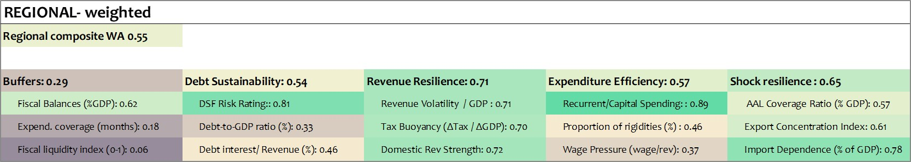

Regional Fiscal Resilience Profiles
Compare regional and peer-group fiscal resilience patterns across Pacific SIDS.
Regional Weighted Average
Composite score: placeholder

Shared constraints

Regional context and recent trends
[Placeholder regional overview text.]